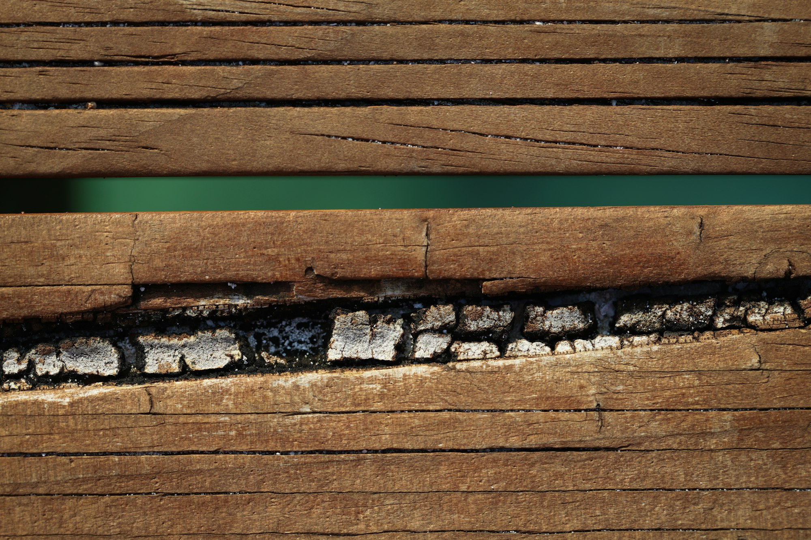

Garantia por EscritoDescupinização Avançada
Eliminação de cupins de madeira seca e cupins de solo. Injeção técnica nos conduítes e vigamentos, com criação de barreira química perimetral em alvenaria para salvar forros e móveis.
- Perfurações milimétricas sem danificar o acabamento
- Calda cupinicida de efeito residual prolongado
- Laudo de garantia contratual por escrito